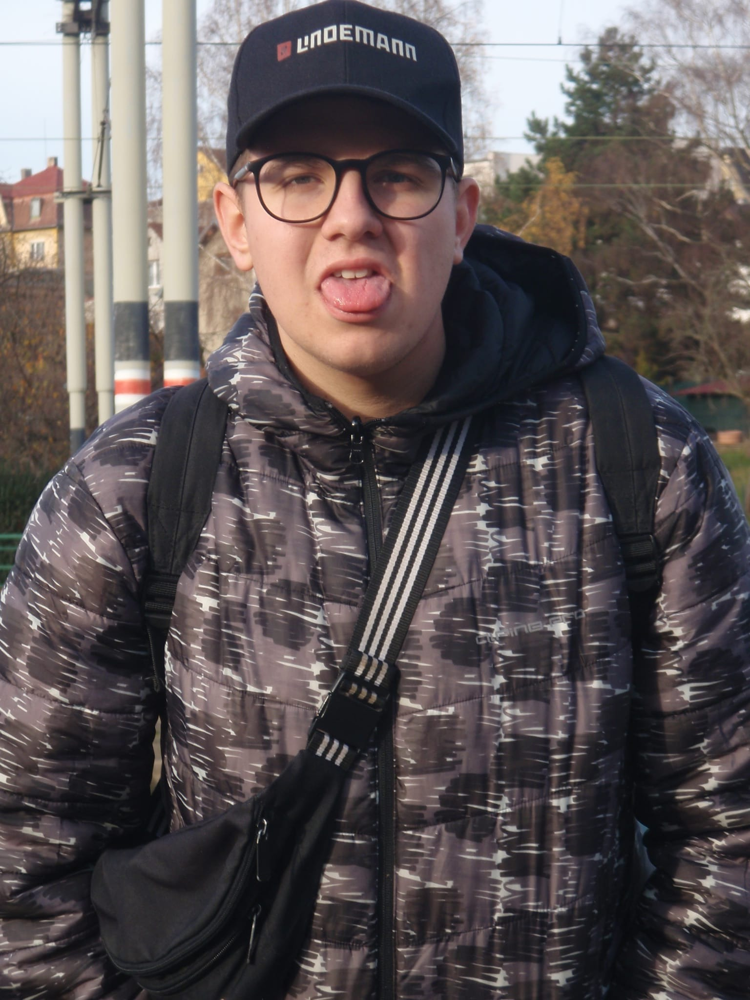

Jmenuji se Kryštof Raus a je mi 15 let. Studuji na gymnáziu, kde mě nejvíce baví němčina, čeština a hudební výchova. Ve volném čase se věnuji amatérské fotografii, hlavně focení přírody, města a občas i portrétů kamarádů. Fotografie mě baví, protože díky ní můžu zachytit různé momenty a zkusit je vidět trochu jinak. Kromě focení rád trávím čas s kamarády, dívám se na filmy a zkouším nové věci na počítači. Do budoucna bych se chtěl zlepšovat ve focení a možná se tomu jednou věnovat profesionálně..
Boční informace
© 2025 Student